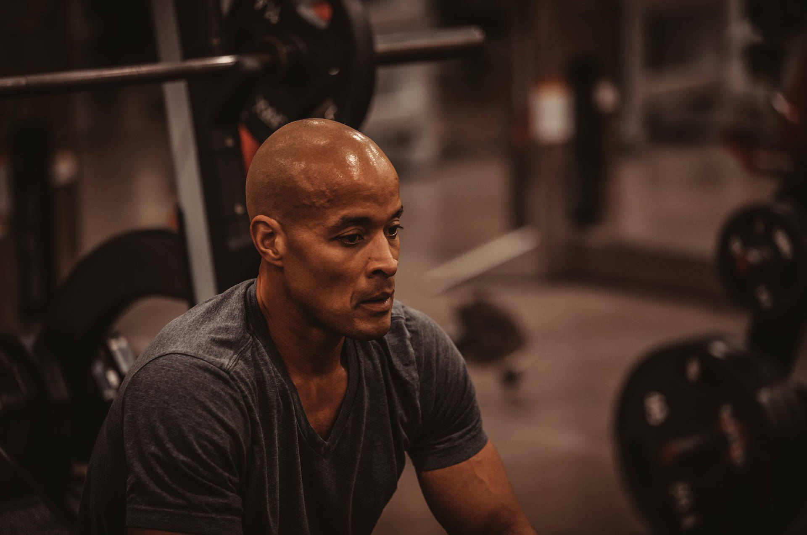

1.Reduce anxiety and depression
 Studies show that exercise can treat mild to moderate depression as effectively as antidepressant medication—but without the side-effects, of course Your muscles need time to heal. Every time you exercise, your muscle tissue is experiencing tiny little tears. It’s a crucial part of getting stronger and bulking up..
As one example, a recent study done by the Harvard T.H. Chan School of Public Health found that running for 15 minutes a day or walking for an hour reduces the risk of major depression by 26%. In addition to relieving depression symptoms, research also shows that maintaining an exercise schedule can prevent you from relapsing.
The results indicated that stress caused a smaller decline in positive mood among regular exercisers. The sedentary individuals experienced a larger decline in mood. This suggests that regular exercise may increase resilience, helping people cope with difficult situations.
However, it is important to note that the study did not show a direct causal link between stress levels and exercise. Other factors are likely at play — for example, a person with a chronic health condition that forces them to be sedentary may have higher stress levels overall.
Despite this, lower stress levels may mean a person is less likely to experience certain health problems. Older research from 2013 notes that 75–90% of visits to a primary care doctor are for stress-related conditions, such as:
1.cardiovascular disease
2.obesity
3.diabetes
4.sleep problems
Increases oxygen supply to the brain
As your heart starts to pump faster during exercise, it increases the oxygen supply to your brain.
This results in certain changes to the blood vessels of your brain, promoting potential improvements in executive function, which includes working memory, flexible thinking, and self-control.
those who exercise may be able to better deal with common stressors, and this could improve their overall quality of life.